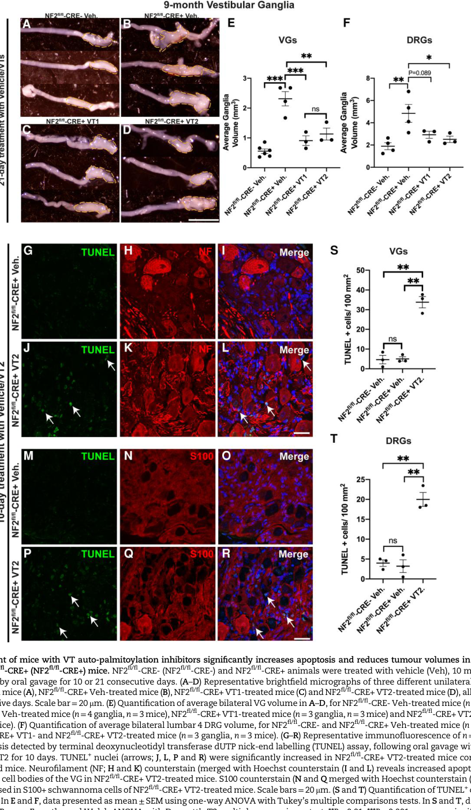

Schwannoma is a benign, usually encapsulated, slow-growing peripheral nerve-sheath tumor composed almost entirely of neoplastic Schwann cells. The central molecular event is biallelic inactivation of the NF2 tumor suppressor gene and loss of its product merlin/schwannomin, which removes contact-dependent growth inhibition and de-represses downstream proliferative signaling — Hippo/YAP-TAZ-TEAD transcriptional output, receptor tyrosine kinase (ErbB2/3, IGF1R, PDGFR) accumulation with RAS-MAPK and PI3K-AKT activation, and mTORC1 signaling. Most schwannomas are sporadic and solitary, but they also arise in NF2-related schwannomatosis (characteristically bilateral vestibular schwannomas, meningiomas, and ependymomas) and in SMARCB1- or LZTR1-related schwannomatosis. Histologically schwannomas show compact, spindle-cell Antoni A areas with nuclear-palisading Verocay bodies, looser myxoid Antoni B areas, diffuse S-100/SOX10 positivity, and an encapsulated growth pattern. Recognized histologic variants include cellular, plexiform, melanotic/psammomatous, and epithelioid (SMARCB1/INI1-deficient) schwannoma. Malignant transformation is rare.
Ask a research question about Schwannoma. OpenScientist will conduct autonomous deep research using the Disorder Mechanisms Knowledge Base and PubMed literature (typically 10-30 minutes).
Do not include personal health information in your question. Questions and results are cached in your browser's local storage.
name: Schwannoma
creation_date: '2026-06-08T00:00:00Z'
category: Neoplastic
categories:
- Benign Neoplasm
- Peripheral Nerve Sheath Tumor
synonyms:
- neurilemmoma
- neurinoma
- benign schwannoma
- schwannoma (WHO grade I)
disease_term:
preferred_term: schwannoma
term:
id: MONDO:0002546
label: schwannoma
description: >-
Schwannoma is a benign, usually encapsulated, slow-growing peripheral
nerve-sheath tumor composed almost entirely of neoplastic Schwann cells.
The central molecular event is biallelic inactivation of the NF2 tumor
suppressor gene and loss of its product merlin/schwannomin, which removes
contact-dependent growth inhibition and de-represses downstream proliferative
signaling — Hippo/YAP-TAZ-TEAD transcriptional output, receptor tyrosine
kinase (ErbB2/3, IGF1R, PDGFR) accumulation with RAS-MAPK and PI3K-AKT
activation, and mTORC1 signaling. Most schwannomas are sporadic and solitary,
but they also arise in NF2-related schwannomatosis (characteristically
bilateral vestibular schwannomas, meningiomas, and ependymomas) and in
SMARCB1- or LZTR1-related schwannomatosis. Histologically schwannomas show
compact, spindle-cell Antoni A areas with nuclear-palisading Verocay bodies,
looser myxoid Antoni B areas, diffuse S-100/SOX10 positivity, and an
encapsulated growth pattern. Recognized histologic variants include cellular,
plexiform, melanotic/psammomatous, and epithelioid (SMARCB1/INI1-deficient)
schwannoma. Malignant transformation is rare.
parents:
- nerve sheath neoplasm
- benign peripheral nerve sheath tumor
references:
- reference: PMID:20301380
title: "NF2-Related Schwannomatosis."
tags:
- GeneReviews
- reference: PMID:29517885
title: "LZTR1- and SMARCB1-Related Schwannomatosis."
tags:
- GeneReviews
has_subtypes:
- name: Vestibular Schwannoma
display_name: Vestibular Schwannoma (Acoustic Neuroma)
classification: anatomic_clinical
description: >-
The most common schwannoma; arises on the vestibulocochlear (eighth cranial)
nerve in the internal auditory canal/cerebellopontine angle. Usually
unilateral and sporadic, but characteristically bilateral in NF2-related
schwannomatosis. Presents with hearing loss, tinnitus, and imbalance.
evidence:
- reference: PMID:20301380
reference_title: "NF2-Related Schwannomatosis."
supports: SUPPORT
evidence_source: HUMAN_CLINICAL
snippet: "NF2-related schwannomatosis (NF2) is characterized by bilateral vestibular schwannomas with associated symptoms of tinnitus, hearing loss, and balance dysfunction."
explanation: GeneReviews defines bilateral vestibular schwannomas as the hallmark of NF2-related disease.
- name: Cellular Schwannoma
classification: histologic
description: >-
A histologic variant composed predominantly of compact, hypercellular
Antoni A tissue with few or no Verocay bodies and occasional mitoses. It is
benign but can be mistaken for malignant peripheral nerve sheath tumor; it
retains S-100/SOX10 positivity and an encapsulated/lobular pattern.
- name: Plexiform Schwannoma
classification: histologic
description: >-
A multinodular ("plexiform") growth pattern of schwannoma involving multiple
fascicles, often cutaneous or subcutaneous. Benign, but its multinodular
architecture can raise concern for plexiform neurofibroma or malignancy.
- name: Melanotic/Psammomatous Schwannoma
display_name: Melanotic (Psammomatous) Schwannoma
classification: histologic
description: >-
A rare pigmented variant in which neoplastic Schwann cells contain melanin;
the psammomatous subtype contains psammoma bodies and is associated with the
Carney complex (PRKAR1A). Unlike most schwannomas, melanotic schwannoma
carries a non-trivial risk of malignant behavior.
- name: SMARCB1/LZTR1-Related
display_name: SMARCB1/LZTR1-Related Schwannoma (Schwannomatosis)
classification: genetic_context
description: >-
Schwannomas arising in non-NF2 schwannomatosis caused by germline pathogenic
variants in SMARCB1 or LZTR1, predisposing to multiple non-intradermal
peripheral and spinal schwannomas. SMARCB1 loss underlies most epithelioid
schwannomas and carries a higher malignancy risk than LZTR1-related disease.
evidence:
- reference: PMID:29517885
reference_title: "LZTR1- and SMARCB1-Related Schwannomatosis."
supports: SUPPORT
evidence_source: HUMAN_CLINICAL
snippet: "LZTR1- and SMARCB1-related schwannomatosis are characterized by a predisposition to develop multiple non-intradermal schwannomas."
explanation: GeneReviews defines SMARCB1/LZTR1-related schwannomatosis by multiple non-intradermal schwannomas.
- reference: PMID:29517885
reference_title: "LZTR1- and SMARCB1-Related Schwannomatosis."
supports: SUPPORT
evidence_source: HUMAN_CLINICAL
snippet: "Malignancy remains a risk especially in individuals with SMARCB1-related schwannomatosis."
explanation: GeneReviews notes the elevated malignancy risk in SMARCB1-related schwannomatosis.
pathophysiology:
- name: Biallelic NF2 Merlin Inactivation
description: >-
The initiating event in most schwannomas is biallelic inactivation of the
NF2 tumor suppressor gene and loss of its product merlin/schwannomin, a
4.1/ERM-family cytoskeleton-to-membrane linker with cell-type-specific
growth-inhibiting activity. NF2 deficiency is associated with a narrow
tumor spectrum dominated by schwannomas and meningiomas.
cell_types:
- preferred_term: Schwann cell
term:
id: CL:0002573
label: Schwann cell
genes:
- preferred_term: NF2
term:
id: hgnc:7773
label: NF2
locations:
- preferred_term: peripheral nervous system
term:
id: UBERON:0000010
label: peripheral nervous system
evidence:
- reference: PMID:19029950
reference_title: Merlin regulates transmembrane receptor accumulation and signaling at the plasma membrane in primary mouse Schwann cells and in human schwannomas.
supports: SUPPORT
evidence_source: IN_VITRO
snippet: "The NF2 gene product, merlin/schwannomin, is a cytoskeleton organizer with unique growth-inhibiting activity in specific cell types."
explanation: Establishes merlin/schwannomin as the NF2 product with cell-type-specific growth-inhibitory activity.
- reference: PMID:19029950
reference_title: Merlin regulates transmembrane receptor accumulation and signaling at the plasma membrane in primary mouse Schwann cells and in human schwannomas.
supports: SUPPORT
evidence_source: IN_VITRO
snippet: "A narrow spectrum of tumors is associated with NF2 deficiency, mainly schwannomas and meningiomas, suggesting cell-specific mechanisms of growth control."
explanation: Supports the narrow NF2-deficiency tumor spectrum dominated by schwannomas.
downstream:
- target: Loss of Contact-Dependent Growth Inhibition
description: Merlin loss abolishes contact-dependent inhibition of Schwann-cell proliferation.
- name: Loss of Contact-Dependent Growth Inhibition
description: >-
Merlin normally restrains growth by controlling contact-dependent inhibition
of proliferation. At cell-to-cell contact merlin limits the delivery and
membrane accumulation of growth factor receptors. Loss of merlin removes
this brake, so Schwann cells continue proliferating despite confluence —
the permissive state for schwannoma formation.
cell_types:
- preferred_term: Schwann cell
term:
id: CL:0002573
label: Schwann cell
biological_processes:
- preferred_term: contact inhibition
modifier: DECREASED
term:
id: GO:0060242
label: contact inhibition
- preferred_term: negative regulation of cell population proliferation
modifier: DECREASED
term:
id: GO:0008285
label: negative regulation of cell population proliferation
evidence:
- reference: PMID:21481793
reference_title: A tight junction-associated Merlin-angiomotin complex mediates Merlin's regulation of mitogenic signaling and tumor suppressive functions.
supports: SUPPORT
evidence_source: IN_VITRO
snippet: "The Merlin/NF2 tumor suppressor restrains cell growth and tumorigenesis by controlling contact-dependent inhibition of proliferation."
explanation: Directly supports merlin's control of contact-dependent inhibition of proliferation.
- reference: PMID:19029950
reference_title: Merlin regulates transmembrane receptor accumulation and signaling at the plasma membrane in primary mouse Schwann cells and in human schwannomas.
supports: SUPPORT
evidence_source: IN_VITRO
snippet: "We found that merlin regulates contact inhibition of proliferation by limiting the delivery of several growth factor receptors at the plasma membrane of primary SCs."
explanation: Shows merlin enforces contact inhibition by limiting growth-factor-receptor delivery in Schwann cells.
downstream:
- target: Receptor Tyrosine Kinase and RAS-MAPK Activation
description: Loss of contact inhibition is accompanied by accumulation of ErbB/RTK receptors and mitogenic signaling.
- target: YAP/TAZ-TEAD Transcriptional Activation
description: Merlin loss de-represses the Hippo effectors YAP/TAZ.
- name: Receptor Tyrosine Kinase and RAS-MAPK Activation
description: >-
Upon cell-to-cell contact, merlin downregulates membrane levels of ErbB2 and
ErbB3, inhibiting downstream AKT (protein kinase B) and MAPK signaling. Loss
of merlin causes accumulation of ErbB2/3, IGF1R, and PDGFR in Schwann cells
and human schwannomas, driving mitogenic signaling. The merlin-angiomotin
complex additionally restrains Rac1 and the Ras-MAPK pathway.
cell_types:
- preferred_term: Schwann cell
term:
id: CL:0002573
label: Schwann cell
biological_processes:
- preferred_term: ERBB signaling pathway
modifier: INCREASED
term:
id: GO:0038127
label: ERBB signaling pathway
evidence:
- reference: PMID:19029950
reference_title: Merlin regulates transmembrane receptor accumulation and signaling at the plasma membrane in primary mouse Schwann cells and in human schwannomas.
supports: SUPPORT
evidence_source: IN_VITRO
snippet: "upon cell-to-cell contact, merlin downregulates the membrane levels of ErbB2 and ErbB3, thus inhibiting the activity of the downstream mitogenic signaling pathways protein kinase B and mitogen-activated protein kinase."
explanation: Supports merlin's suppression of ErbB2/3-driven AKT/MAPK mitogenic signaling, lost in schwannoma.
- reference: PMID:19029950
reference_title: Merlin regulates transmembrane receptor accumulation and signaling at the plasma membrane in primary mouse Schwann cells and in human schwannomas.
supports: SUPPORT
evidence_source: IN_VITRO
snippet: "We also observed accumulation of growth factor receptors such as ErbB2 and 3, insulin-like growth factor 1 receptor and platelet-derived growth factor receptor in peripheral nerves of Nf2-mutant mice and in human NF2 schwannomas"
explanation: Documents RTK accumulation in human NF2 schwannomas and Nf2-mutant nerves.
- reference: PMID:21481793
reference_title: A tight junction-associated Merlin-angiomotin complex mediates Merlin's regulation of mitogenic signaling and tumor suppressive functions.
supports: SUPPORT
evidence_source: IN_VITRO
snippet: "Depletion of Angiomotin in Nf2(-/-) Schwann cells attenuates the Ras-MAPK signaling pathway, impedes cellular proliferation in vitro and tumorigenesis in vivo."
explanation: Links the merlin-angiomotin axis to Ras-MAPK signaling and proliferation in Nf2-null Schwann cells.
downstream:
- target: mTORC1 Activation
description: RTK/PI3K signaling converges on mTORC1 in merlin-deficient tumors.
- target: Schwann-Cell Proliferation and Benign Tumor Formation
description: Sustained mitogenic signaling drives Schwann-cell proliferation.
- name: YAP/TAZ-TEAD Transcriptional Activation
description: >-
Merlin signals through the Hippo pathway; merlin loss releases the
transcriptional coactivators YAP and TAZ, which translocate to the nucleus
and drive TEAD-dependent proliferative transcription. NF2-null schwannoma
cells depend on YAP/TAZ-TEAD activity, and genetic or pharmacologic
inhibition of TEAD blocks (and can regress) schwannoma growth.
cell_types:
- preferred_term: Schwann cell
term:
id: CL:0002573
label: Schwann cell
biological_processes:
- preferred_term: hippo signaling
modifier: DECREASED
term:
id: GO:0035329
label: hippo signaling
- preferred_term: positive regulation of Schwann cell proliferation
modifier: INCREASED
term:
id: GO:0010625
label: positive regulation of Schwann cell proliferation
evidence:
- reference: PMID:18953429
reference_title: The neurofibromatosis 2 tumor suppressor gene product, merlin, regulates human meningioma cell growth by signaling through YAP.
supports: SUPPORT
evidence_source: IN_VITRO
snippet: "merlin controls cell proliferation and apoptosis by signaling through the Hippo pathway to inhibit the function of the transcriptional coactivator Yorkie."
explanation: Establishes the merlin-Hippo-YAP (Yorkie) axis controlling proliferation; mechanism shared by NF2-null tumors.
- reference: PMID:18953429
reference_title: The neurofibromatosis 2 tumor suppressor gene product, merlin, regulates human meningioma cell growth by signaling through YAP.
supports: PARTIAL
evidence_source: IN_VITRO
snippet: "merlin loss in both meningioma cell lines and primary tumors resulted in increased YAP expression and nuclear localization."
explanation: Demonstrates merlin loss increases nuclear YAP; shown in NF2-null meningioma, the paralogous NF2-driven tumor (PARTIAL because the cells are meningioma, not schwannoma).
- reference: PMID:36148553
reference_title: Inhibition of YAP/TAZ-driven TEAD activity prevents growth of NF2-null schwannoma and meningioma.
supports: SUPPORT
evidence_source: IN_VITRO
snippet: "Schwannoma tumours typically arise on the eighth cranial nerve and are mostly caused by loss of the tumour suppressor Merlin (NF2)."
explanation: Confirms merlin/NF2 loss as the predominant schwannoma driver.
- reference: PMID:36148553
reference_title: Inhibition of YAP/TAZ-driven TEAD activity prevents growth of NF2-null schwannoma and meningioma.
supports: SUPPORT
evidence_source: MODEL_ORGANISM
snippet: "successful use of TEAD palmitoylation inhibitors in a preclinical mouse model of schwannoma points to their potential future clinical use."
explanation: In vivo mouse-model evidence that YAP/TAZ-TEAD activity is required for schwannoma growth.
downstream:
- target: Schwann-Cell Proliferation and Benign Tumor Formation
description: YAP/TAZ-TEAD output drives the proliferative program of schwannoma cells.
- name: mTORC1 Activation
description: >-
Merlin-deficient tumors show activation of the mTORC1 signaling pathway,
considered a key driver of tumor growth in NF2-deficient tumors and a
rationale for mTOR inhibitor therapy, although clinical mTORC1 inhibition has
been largely cytostatic rather than tumor-shrinking.
cell_types:
- preferred_term: Schwann cell
term:
id: CL:0002573
label: Schwann cell
biological_processes:
- preferred_term: TOR signaling
modifier: INCREASED
term:
id: GO:0031929
label: TOR signaling
evidence:
- reference: PMID:24311643
reference_title: Phase II study of everolimus in children and adults with neurofibromatosis type 2 and progressive vestibular schwannomas.
supports: SUPPORT
evidence_source: HUMAN_CLINICAL
snippet: "Activation of the mammalian target of rapamycin (mTOR) signaling pathway is thought to be a key driver of tumor growth in Merlin (NF2)-deficient tumors."
explanation: Supports mTOR pathway activation as a proposed driver in merlin-deficient tumors.
- name: Schwann-Cell Proliferation and Benign Tumor Formation
description: >-
Convergent loss of growth restraint and activation of YAP/TAZ-TEAD, RTK/MAPK,
and mTORC1 signaling drive clonal proliferation of neoplastic Schwann cells,
producing an encapsulated, slow-growing, benign nerve-sheath tumor (Antoni A
palisading Verocay bodies and myxoid Antoni B areas). Malignant
transformation is rare.
cell_types:
- preferred_term: Schwann cell
term:
id: CL:0002573
label: Schwann cell
biological_processes:
- preferred_term: Schwann cell proliferation
modifier: INCREASED
term:
id: GO:0014010
label: Schwann cell proliferation
evidence:
- reference: PMID:36148553
reference_title: Inhibition of YAP/TAZ-driven TEAD activity prevents growth of NF2-null schwannoma and meningioma.
supports: SUPPORT
evidence_source: IN_VITRO
snippet: "we have examined the role of the Hippo signalling pathway in driving tumour cell growth."
explanation: Frames Hippo-driven proliferation as the engine of schwannoma tumor growth.
histopathology:
- name: Antoni A Spindle-Cell Areas with Verocay Bodies
finding_term:
preferred_term: Antoni A pattern with nuclear-palisading Verocay bodies
term:
id: NCIT:C53643
label: Spindle Cell Pattern
frequency: VERY_FREQUENT
diagnostic: true
description: >-
Compact, hypercellular Antoni A tissue of spindled Schwann cells with nuclear
palisading forming Verocay bodies is a characteristic schwannoma pattern, set
against looser, myxoid Antoni B areas.
evidence:
- reference: PMID:28368924
reference_title: "SMARCB1/INI1 Loss in Epithelioid Schwannoma: A Clinicopathologic and Immunohistochemical Study of 65 Cases."
supports: SUPPORT
evidence_source: HUMAN_CLINICAL
snippet: "Some tumors showed foci resembling conventional schwannoma (spindled morphology, 29; Antoni B foci or Verocay bodies, 8; hyalinized thick-walled vessels, 16)."
explanation: Documents the conventional schwannoma features (spindled morphology, Antoni B foci, Verocay bodies) used diagnostically.
- name: S-100 and SOX10 Positivity
finding_term:
preferred_term: Diffuse S-100 and SOX10 immunopositivity
term:
id: NCIT:C35867
label: Morphologic Finding
frequency: VERY_FREQUENT
diagnostic: true
description: >-
Schwann-cell origin is confirmed by diffuse S-100 protein positivity and
consistent SOX10 nuclear positivity, distinguishing schwannoma from
non-neural mimics.
evidence:
- reference: PMID:28368924
reference_title: "SMARCB1/INI1 Loss in Epithelioid Schwannoma: A Clinicopathologic and Immunohistochemical Study of 65 Cases."
supports: SUPPORT
evidence_source: HUMAN_CLINICAL
snippet: "All tumors showed diffuse positivity for S-100 protein and consistent positivity for SOX10 (50/50)"
explanation: Supports diffuse S-100/SOX10 positivity as a defining schwannoma immunophenotype.
- name: SMARCB1/INI1 Loss in Epithelioid Schwannoma
finding_term:
preferred_term: Loss of SMARCB1/INI1 nuclear expression
term:
id: NCIT:C35867
label: Morphologic Finding
frequency: FREQUENT
description: >-
The epithelioid variant of schwannoma frequently shows loss of SMARCB1/INI1
nuclear expression, linking it mechanistically to SMARCB1-related
schwannomatosis.
evidence:
- reference: PMID:28368924
reference_title: "SMARCB1/INI1 Loss in Epithelioid Schwannoma: A Clinicopathologic and Immunohistochemical Study of 65 Cases."
supports: SUPPORT
evidence_source: HUMAN_CLINICAL
snippet: "Loss of SMARCB1/INI1 expression is seen in 42% of tumors."
explanation: Quantifies SMARCB1/INI1 loss in epithelioid schwannoma.
phenotypes:
- name: Schwannoma (Peripheral Nerve Sheath Tumor)
description: >-
The defining manifestation is one or more benign Schwann-cell tumors of
cranial, spinal, or peripheral nerves.
phenotype_term:
preferred_term: Schwannoma
term:
id: HP:0100008
label: Schwannoma
evidence:
- reference: PMID:29517885
reference_title: "LZTR1- and SMARCB1-Related Schwannomatosis."
supports: SUPPORT
evidence_source: HUMAN_CLINICAL
snippet: "Schwannomas most often affect peripheral nerves and spinal nerves."
explanation: Supports schwannomas of peripheral and spinal nerves as the core manifestation.
- name: Hearing Impairment
description: >-
Sensorineural hearing loss results from vestibular schwannoma compressing or
infiltrating the cochlear nerve; it is a hallmark of NF2-related disease.
phenotype_term:
preferred_term: Hearing impairment
term:
id: HP:0000365
label: Hearing impairment
clinical_course: PROGRESSIVE
evidence:
- reference: PMID:20301380
reference_title: "NF2-Related Schwannomatosis."
supports: SUPPORT
evidence_source: HUMAN_CLINICAL
snippet: "NF2-related schwannomatosis (NF2) is characterized by bilateral vestibular schwannomas with associated symptoms of tinnitus, hearing loss, and balance dysfunction."
explanation: GeneReviews lists hearing loss among the core vestibular-schwannoma symptoms.
- name: Tinnitus
description: >-
Tinnitus is a common symptom of vestibular schwannoma reflecting eighth-nerve
involvement.
phenotype_term:
preferred_term: Tinnitus
term:
id: HP:0000360
label: Tinnitus
evidence:
- reference: PMID:20301380
reference_title: "NF2-Related Schwannomatosis."
supports: SUPPORT
evidence_source: HUMAN_CLINICAL
snippet: "NF2-related schwannomatosis (NF2) is characterized by bilateral vestibular schwannomas with associated symptoms of tinnitus, hearing loss, and balance dysfunction."
explanation: GeneReviews lists tinnitus among the core vestibular-schwannoma symptoms.
- name: Balance Dysfunction
description: >-
Imbalance, disequilibrium, and vertigo arise from vestibular-nerve
involvement by vestibular schwannoma.
phenotype_term:
preferred_term: Vertigo or disequilibrium
term:
id: HP:0002321
label: Vertigo
evidence:
- reference: PMID:20301380
reference_title: "NF2-Related Schwannomatosis."
supports: SUPPORT
evidence_source: HUMAN_CLINICAL
snippet: "NF2-related schwannomatosis (NF2) is characterized by bilateral vestibular schwannomas with associated symptoms of tinnitus, hearing loss, and balance dysfunction."
explanation: GeneReviews lists balance dysfunction among the core vestibular-schwannoma symptoms.
- name: Pain or Asymptomatic Mass
description: >-
In non-vestibular and schwannomatosis-associated schwannomas, the most common
presentation is localized or diffuse pain or an asymptomatic palpable mass.
phenotype_term:
preferred_term: Neoplasm
term:
id: HP:0002664
label: Neoplasm
evidence:
- reference: PMID:29517885
reference_title: "LZTR1- and SMARCB1-Related Schwannomatosis."
supports: SUPPORT
evidence_source: HUMAN_CLINICAL
snippet: "The most common presenting feature is localized or diffuse pain or asymptomatic mass."
explanation: Supports pain or an asymptomatic mass as the typical schwannomatosis presentation.
genetic:
- name: NF2 biallelic inactivation
gene_term:
preferred_term: NF2
term:
id: hgnc:7773
label: NF2
association: >-
Biallelic NF2 inactivation (germline plus somatic, or two somatic hits) is
the central driver of sporadic schwannoma and NF2-related schwannomatosis.
relationship_type: CAUSATIVE
evidence:
- reference: PMID:36148553
reference_title: Inhibition of YAP/TAZ-driven TEAD activity prevents growth of NF2-null schwannoma and meningioma.
supports: SUPPORT
evidence_source: IN_VITRO
snippet: "Schwannoma tumours typically arise on the eighth cranial nerve and are mostly caused by loss of the tumour suppressor Merlin (NF2)."
explanation: Supports NF2/merlin loss as the predominant cause of schwannoma.
- name: SMARCB1 germline pathogenic variant
gene_term:
preferred_term: SMARCB1
term:
id: hgnc:11103
label: SMARCB1
association: >-
Germline SMARCB1 variants cause SMARCB1-related schwannomatosis with multiple
non-intradermal schwannomas; SMARCB1/INI1 loss characterizes epithelioid
schwannoma. SMARCB1-related disease carries elevated malignancy and
meningioma risk.
relationship_type: CAUSATIVE
evidence:
- reference: PMID:29517885
reference_title: "LZTR1- and SMARCB1-Related Schwannomatosis."
supports: SUPPORT
evidence_source: HUMAN_CLINICAL
snippet: "The diagnosis of LZTR1- or SMARCB1-related schwannomatosis is established in a proband with characteristic clinical findings and a heterozygous germline pathogenic variant in LZTR1 or SMARCB1 identified by molecular genetic testing."
explanation: Supports germline SMARCB1 variants as causative of SMARCB1-related schwannomatosis.
- name: LZTR1 germline pathogenic variant
gene_term:
preferred_term: LZTR1
term:
id: hgnc:6742
label: LZTR1
association: >-
Germline LZTR1 variants cause LZTR1-related schwannomatosis with multiple
non-intradermal schwannomas, including a risk of unilateral vestibular
schwannoma.
relationship_type: CAUSATIVE
evidence:
- reference: PMID:29517885
reference_title: "LZTR1- and SMARCB1-Related Schwannomatosis."
supports: SUPPORT
evidence_source: HUMAN_CLINICAL
snippet: "The diagnosis of LZTR1- or SMARCB1-related schwannomatosis is established in a proband with characteristic clinical findings and a heterozygous germline pathogenic variant in LZTR1 or SMARCB1 identified by molecular genetic testing."
explanation: Supports germline LZTR1 variants as causative of LZTR1-related schwannomatosis.
treatments:
- name: Microsurgical Resection
description: >-
Surgical removal is the mainstay for symptomatic or growing schwannomas;
surgery on vestibular schwannomas carries risk to the eighth and adjacent
cranial nerves. Surgery is indicated for schwannomas causing uncontrolled
localized pain or a neurologic deficit.
treatment_term:
preferred_term: surgical procedure
term:
id: MAXO:0000004
label: surgical procedure
evidence:
- reference: PMID:29517885
reference_title: "LZTR1- and SMARCB1-Related Schwannomatosis."
supports: SUPPORT
evidence_source: HUMAN_CLINICAL
snippet: "surgery for schwannomas associated with uncontrolled localized pain or a neurologic deficit"
explanation: GeneReviews supports surgical resection for symptomatic schwannomas.
- name: Stereotactic Radiosurgery
description: >-
Stereotactic radiosurgery (e.g., Gamma Knife) is a non-surgical option for
small to medium vestibular schwannomas. In hereditary schwannomatosis,
radiation can increase the risk of malignant transformation and should be
used cautiously.
treatment_term:
preferred_term: stereotactic radiosurgery
term:
id: MAXO:0009088
label: stereotactic radiosurgery
evidence:
- reference: PMID:29517885
reference_title: "LZTR1- and SMARCB1-Related Schwannomatosis."
supports: SUPPORT
evidence_source: HUMAN_CLINICAL
snippet: "Radiation can increase the risk for malignant transformation and should be"
explanation: GeneReviews drug/agent-safety warning that radiation can promote malignant transformation in schwannomatosis.
- name: Bevacizumab
description: >-
Bevacizumab, an anti-VEGF monoclonal antibody, can reduce tumor volume and
improve hearing in NF2-related progressive vestibular schwannomas, targeting
VEGF-driven tumor vasculature.
therapeutic_modality: MONOCLONAL_ANTIBODY
treatment_term:
preferred_term: Pharmacotherapy
term:
id: NCIT:C15986
label: Pharmacotherapy
therapeutic_agent:
- preferred_term: bevacizumab
term:
id: NCIT:C2039
label: Bevacizumab
target_phenotypes:
- preferred_term: Hearing impairment
term:
id: HP:0000365
label: Hearing impairment
evidence:
- reference: PMID:19587327
reference_title: Hearing improvement after bevacizumab in patients with neurofibromatosis type 2.
supports: SUPPORT
evidence_source: HUMAN_CLINICAL
snippet: "After bevacizumab treatment in the 10 patients, tumors shrank in 9 patients, and 6 patients had an imaging response, which was maintained in 4 patients during 11 to 16 months of follow-up."
explanation: Demonstrates tumor shrinkage with bevacizumab in NF2-related vestibular schwannoma.
- reference: PMID:19587327
reference_title: Hearing improvement after bevacizumab in patients with neurofibromatosis type 2.
supports: SUPPORT
evidence_source: HUMAN_CLINICAL
snippet: "of the remaining seven patients, four had a hearing response, two had stable hearing, and one had progressive hearing loss."
explanation: Documents hearing improvement with bevacizumab, supporting its use against VS-related hearing loss.
- name: mTOR Inhibition (Everolimus)
description: >-
Everolimus, an oral mTORC1 inhibitor, was evaluated in progressive NF2-related
vestibular schwannoma based on mTOR activation in merlin-deficient tumors;
a phase II study showed no objective tumor or hearing responses, so it is not
an effective monotherapy.
therapeutic_modality: SMALL_MOLECULE
treatment_term:
preferred_term: Pharmacotherapy
term:
id: NCIT:C15986
label: Pharmacotherapy
therapeutic_agent:
- preferred_term: everolimus
term:
id: CHEBI:68478
label: everolimus
evidence:
- reference: PMID:24311643
reference_title: Phase II study of everolimus in children and adults with neurofibromatosis type 2 and progressive vestibular schwannomas.
supports: REFUTE
evidence_source: HUMAN_CLINICAL
snippet: "Everolimus is ineffective for the treatment of progressive VS in NF2 patients."
explanation: Phase II evidence that everolimus monotherapy is ineffective for progressive vestibular schwannoma.
- name: Active Surveillance
description: >-
Many small, asymptomatic schwannomas are monitored with serial imaging and
audiometry. GeneReviews recommends periodic neurologic examination, pain
assessment, and brain/spine MRI surveillance in schwannomatosis.
treatment_term:
preferred_term: active surveillance
term:
id: MAXO:0001492
label: surveillance for malignancies
evidence:
- reference: PMID:29517885
reference_title: "LZTR1- and SMARCB1-Related Schwannomatosis."
supports: SUPPORT
evidence_source: HUMAN_CLINICAL
snippet: "Annual neurologic examination and pain assessment; brain and spine MRI or whole-body MRI every two to three years beginning at age 12 years"
explanation: GeneReviews supports surveillance imaging and neurologic monitoring in schwannomatosis.
Not retrieved in the current evidence set (therefore not asserted here): MeSH ID, ICD-10/ICD-11 codes, Orphanet/OMIM identifiers for schwannoma/VS.
The consensus terminology/diagnostic criteria and clinical outcomes summarized below are derived from aggregated disease-level resources (systematic reviews, consensus updates, surveillance recommendations) plus clinical cohort studies and ClinicalTrials.gov registrations (chiranth2023asystematicreview pages 1-2, screnci2024bevacizumabforvestibular pages 1-2, douwes2024bevacizumabtreatmentfor pages 9-11, NCT04374305 chunk 1).
A key 2022–2025 development is gene-based classification of “schwannomatoses” as cancer predisposition syndromes caused by germline pathogenic variants: * Perrino et al. (2025) abstract: “Schwannomatoses (SWN) are distinct cancer predisposition syndromes caused by germline pathogenic variants in the genes NF2, SMARCB1, or LZTR1.” (Feb 2025) (perrino2025updateoncancer pages 3-4) * Perrino et al. (2025) abstract: “Neurofibromatosis type 2 was recently renamed as NF2-related SWN …” (perrino2025updateoncancer pages 3-4)
OpenTargets also highlights NF2, SMARCB1, and LZTR1 as top disease-associated targets for schwannoma/schwannomatosis, consistent with genetic causality in these syndromes (OpenTargets Search: schwannoma,vestibular schwannoma,schwannomatosis).
Environmental/lifestyle risk factors: not established in the retrieved evidence for schwannoma causation. A 2023 review on hearing loss and VS notes attention to “environmental factors” that could contribute to hearing loss progression, but does not provide validated causal environmental risk factors for schwannoma itself in the retrieved excerpt (otaner2026vestibularschwannomagenetic pages 1-2).
Not identified in the retrieved evidence set.
2022 consensus updates changed both nomenclature and diagnostic criteria: * “Schwannomatosis” used as an umbrella term for disorders that predispose to schwannomas, and each type is classified by the causative gene; “NF2 is now termed NF2-related schwannomatosis.” (Tamura 2024) (tamura2024historicaldevelopmentof pages 1-3) * Gene-based syndromes highlighted in 2025 surveillance perspective: NF2-, SMARCB1-, LZTR1-related schwannomatosis (perrino2025updateoncancer pages 3-4).
A key 2023 advance is direct preclinical demonstration that inhibiting TEAD activity can regress schwannoma: * Laraba et al. (Brain, Sep 2023) used human primary schwannoma cells and mouse schwannoma models and found that genetic ablation of YAP/TAZ or TEAD palmitoylation inhibitors can block and regress schwannoma growth, supporting Hippo pathway targeting (laraba2023inhibitionofyaptazdriven pages 1-2, laraba2023inhibitionofyaptazdriven pages 2-3).
Visual evidence: the in vivo regression effect with TEAD auto-palmitoylation inhibitors is shown in a central figure with tumor-volume reductions and increased apoptosis (cropped figure region) (laraba2023inhibitionofyaptazdriven media d8f8c3e0).
Not retrievable here: specific methylation signatures, transcriptomic/proteomic markers, or single-cell datasets are referenced in some reviews but not captured with extractable quantitative details in the current evidence excerpts.
No validated causal environmental exposures for schwannoma were identified in the retrieved evidence set. Environmental factors are discussed in the context of hearing loss broadly, but without definitive etiologic linkage to schwannoma occurrence in the excerpts available (otaner2026vestibularschwannomagenetic pages 1-2).
VS-associated hearing loss described as multifactorial, involving tumor-secreted factors, inflammation, vascular changes, and inner ear damage, alongside nerve compression (otaner2026vestibularschwannomagenetic pages 1-2).
Not specifically defined in retrieved evidence excerpts.
Note: Incidence/prevalence for all schwannomas (sporadic) were not retrieved in the current evidence set.
Tamura et al. (2024) summarizes consensus criteria: * Diagnosis can be made by (1) bilateral vestibular schwannomas, (2) an identical NF2 pathogenic variant in ≥2 anatomically distinct NF2-related tumors, or (3) combinations of major/minor criteria (tamura2024historicaldevelopmentof pages 3-4). * Mosaic NF2: “clearly less than 50%” pathogenic VAF in blood/saliva, or shared pathogenic variant across ≥2 anatomically unrelated tumors but absent from unaffected tissue (tamura2024historicaldevelopmentof pages 3-4).
Not systematically extractable from current excerpts (e.g., neurofibroma vs schwannoma, meningioma, MPNST). A 2025 review notes hybrid neurofibroma/schwannoma can be diagnostically confusing (retrieved but not evidence-extracted here).
Systemic therapy outcomes in NF2-related VS are commonly assessed using volumetric radiographic response (>20% decrease) and hearing response metrics (WRS, PTA), as used in systematic reviews and cohort studies (chiranth2023asystematicreview pages 1-2, douwes2024bevacizumabtreatmentfor pages 2-4).
In a single-center cohort, post-treatment radiologic surveillance showed 55% progression after stopping bevacizumab (with median post-treatment follow-up 19.3 months), and symptom worsening was frequent after discontinuation (douwes2024bevacizumabtreatmentfor pages 8-9, douwes2024bevacizumabtreatmentfor pages 9-11).
VS management options include observation, microsurgery, and stereotactic radiosurgery, as summarized in a recent narrative review (otaner2026vestibularschwannomagenetic pages 1-2).
Bevacizumab (anti-VEGF monoclonal antibody) is consistently the systemic therapy with the strongest clinical signal in NF2-related VS, though generally off-label and supported mainly by single-arm/retrospective evidence (otaner2026vestibularschwannomagenetic pages 1-2, chiranth2023asystematicreview pages 1-2, douwes2024bevacizumabtreatmentfor pages 9-11).
The table below compiles key quantitative efficacy/toxicity statistics from 2023–2024 reviews and a 2024 real-world cohort.
| Source | Population | N | Bevacizumab dose/schedule | Radiographic response definition and rates | Hearing response definition and rates | Key adverse events and rates | Notes |
|---|---|---|---|---|---|---|---|
| Chiranth et al., 2023, Neuro-Oncology Advances, DOI: https://doi.org/10.1093/noajnl/vdad099 | NF2-related schwannomatosis with vestibular schwannoma; pooled systematic review of targeted therapy studies | 200 across 10 bevacizumab studies (16 total studies tested 6 drugs) | Review-level summary; notes that lower-dose bevacizumab may retain efficacy with less toxicity | REiNS volumetric criteria: radiographic response (RR) = >20% tumor-volume decrease; progression = >20% increase. Pooled bevacizumab RR 38% (95% CI 31–45%); bevacizumab had highest efficacy among targeted agents reviewed | Pooled hearing response (HR) 45% (95% CI 36–54%) | Common toxicities: hypertension and menorrhagia | Comparator agents in review: lapatinib RR 6%, HR 31%; VEGFR vaccine RR 29%, HR 40%. Authors conclude bevacizumab showed the highest efficacy, but further trials of other agents/combination therapy are needed (chiranth2023asystematicreview pages 1-2) |
| Screnci et al., 2024, Journal of Clinical Medicine, DOI: https://doi.org/10.3390/jcm13237488 | Neurofibromatosis type 2 / NF2-related vestibular schwannoma; systematic review | 176 across 9 studies | Not consistently reported in pooled excerpt | Partial tumor volume reduction defined as ≥20%: 40%; disease stabilization 50%; progression 10% | Hearing improvement 36%; hearing stabilization 46%; hearing deterioration 18% | Severe adverse effects in 13% (including hypertension and thromboembolic events); 18% reported no side effects | Tumor regrowth observed in some patients after treatment discontinuation, supporting need for long-term monitoring (screnci2024bevacizumabforvestibular pages 1-2) |
| Douwes et al., 2024, Cancers, DOI: https://doi.org/10.3390/cancers16081479 | Single-center NF2-related schwannomatosis cohort treated for target vestibular schwannoma | 17 patients; radiology evaluable in 16; hearing evaluable in 15 target ears; post-treatment symptom surveillance in 11; post-treatment radiology in 12 | Median 7.5 mg/kg IV every 3 weeks (range 5.6–7.5; interval range 3.0–4.4 weeks); planned regimen 7.5 mg/kg q3wk for at least 6 months; median duration 7.1 months (range 2.1–23.9) | Definition: improved = ≥20% decrease in extrameatal volume; stable = between −20% and +20%; worsened = ≥20% increase. On treatment: regression 31% (5/16), stable 69% (11/16), no ≥20% progression reported. Median extrameatal volume 1.24 cm^3 to 1.15 cm^3. Pre-treatment growth 43% overall (15% annually) vs −12% overall (−13% annually) during treatment. Post-treatment surveillance: 9% regression, 36% stable, 55% progression | Definition: improved = ≥10% WRS increase; worsened = ≥10% WRS decrease; if WRS remained 100%, ≥10 dB PTA change considered significant. On treatment: 40% improved, 53% stable, 7% worsened in target ears (6/15, 8/15, 1/15); reported as hearing preservation 93%. Median WRS 74% to 82%; median PTA 57 dB to 61 dB. After discontinuation (n=11), 82% stable and 18% hearing loss | 94% had ≥1 adverse event; 50 total AEs: grade 1 62%, grade 2 34%, grade 3 4%, no grade 4/5. Hypertension 82% (grade 3 in 12%; 36% of hypertensive patients required antihypertensives), fatigue 29%, proteinuria 6%. Treatment discontinuation due to AEs in 29% | Indications: progressive hearing loss 59%, other NF2 symptoms 35%, tumor size 6%. Symptoms improved in 41%, stable in 47%, worsened in 12% during treatment; summarized as clinical symptom improvement/preservation in 88%. Reasons for stopping included radiologic stability/regression and/or hearing benefit, AEs (29%), response failure (6%), patient preference (6%). After stopping (median surveillance 29.2 months), 27% remained stable and 73% worsened symptomatically; no further symptom improvement. Four patients were retreated with mixed results; two maintenance-regimen patients remained stable (douwes2024bevacizumabtreatmentfor pages 5-8, douwes2024bevacizumabtreatmentfor pages 9-11, douwes2024bevacizumabtreatmentfor pages 4-5, douwes2024bevacizumabtreatmentfor pages 8-9, douwes2024bevacizumabtreatmentfor pages 2-4) |
Table: This table compiles the main quantitative bevacizumab outcomes for NF2-related vestibular schwannoma from a 2023 systematic review, a 2024 systematic review, and a 2024 single-center cohort. It is useful for comparing pooled efficacy, toxicity, and post-discontinuation patterns across evidence sources.
Real-world implementation example (single-center, 2013–2023): * Douwes et al. (Cancers, Apr 2024) used 7.5 mg/kg IV every 3 weeks (median duration 7.1 months) and reported hearing preservation 93%, with 31% tumor regression and 69% stable disease; adverse events were common (hypertension 82%; discontinuation due to AEs 29%) (douwes2024bevacizumabtreatmentfor pages 9-11, douwes2024bevacizumabtreatmentfor pages 4-5).
No primary prevention strategies for sporadic schwannoma were identified in the retrieved evidence set.
Perrino et al. (Clinical Cancer Research, Feb 2025) is explicitly focused on surveillance recommendations in pediatric NF2-, SMARCB1-, and LZTR1-related schwannomatosis, reflecting the shift toward structured screening/surveillance in gene-defined predisposition syndromes (perrino2025updateoncancer pages 3-4).
Not addressed in the retrieved evidence set.
References
(otaner2026vestibularschwannomagenetic pages 1-2): Franciska Otaner, Vratko Himic, Luis O. Vargas, Matthew Abikenari, Neelesh Pandey, Shayndhan Sivanathan, Olivia Kalmanson, Aparna Govindan, Diane Jung, Dagoberto Estevez-Ordonez, Amy Wang, Sanjeeva Jeyaretna, Ashish H. Shah, Ricardo J. Komotar, Bradley Gampel, Christine Dinh, and Michael E. Ivan. Vestibular schwannoma: genetic and epigenetic mechanisms, hearing loss, and emerging therapies. Journal of Neuro-Oncology, May 2026. URL: https://doi.org/10.1007/s11060-026-05621-4, doi:10.1007/s11060-026-05621-4. This article has 0 citations and is from a peer-reviewed journal.
(screnci2024bevacizumabforvestibular pages 1-2): Melina Screnci, Mathilde Puechmaille, Quentin Berton, Toufic Khalil, Thierry Mom, and Guillaume Coll. Bevacizumab for vestibular schwannomas in neurofibromatosis type 2: a systematic review of tumor control and hearing preservation. Journal of Clinical Medicine, 13:7488, Dec 2024. URL: https://doi.org/10.3390/jcm13237488, doi:10.3390/jcm13237488. This article has 7 citations.
(OpenTargets Search: schwannoma,vestibular schwannoma,schwannomatosis): Open Targets Query (schwannoma,vestibular schwannoma,schwannomatosis, 7 results). Buniello, A. et al. (2025). Open Targets Platform: facilitating therapeutic hypotheses building in drug discovery. Nucleic Acids Research.
(perrino2025updateoncancer pages 3-4): Melissa R. Perrino, Marjolijn C. J. Jongmans, Gail E. Tomlinson, Mary-Louise C. Greer, Sarah R. Scollon, Sarah G. Mitchell, Jordan R. Hansford, Kris Ann P. Schultz, Wendy K. Kohlmann, Jennifer M. Kalish, Suzanne P. MacFarland, Anirban Das, Kara N. Maxwell, Stefan M. Pfister, Rosanna Weksberg, Orli Michaeli, Uri Tabori, Gina M. Ney, Philip J. Lupo, Jack J. Brzezinski, Douglas R. Stewart, Emma R. Woodward, and Christian P. Kratz. Update on cancer and central nervous system tumor surveillance in pediatric nf2-, smarcb1-, and lztr1-related schwannomatosis. Clinical cancer research : an official journal of the American Association for Cancer Research, Feb 2025. URL: https://doi.org/10.1158/1078-0432.ccr-24-3278, doi:10.1158/1078-0432.ccr-24-3278. This article has 8 citations.
(rai2025classificationofschwannomas pages 1-2): Pranjal Rai, Girish Bathla, Neetu Soni, Amit Desai, Dinesh Rao, Prasanna Vibhute, and Amit Agarwal. Classification of schwannomas and the new naming convention for "neurofibromatosis-2": genetic updates and international consensus recommendation. The neuroradiology journal, pages 19714009251313510, Jan 2025. URL: https://doi.org/10.1177/19714009251313510, doi:10.1177/19714009251313510. This article has 7 citations and is from a peer-reviewed journal.
(tamura2024historicaldevelopmentof pages 1-3): Ryota TAMURA, Masahiro YO, and Masahiro TODA. Historical development of diagnostic criteria for nf2-related schwannomatosis. Neurologia medico-chirurgica, 64:299-308, Aug 2024. URL: https://doi.org/10.2176/jns-nmc.2024-0067, doi:10.2176/jns-nmc.2024-0067. This article has 12 citations and is from a peer-reviewed journal.
(chiranth2023asystematicreview pages 1-2): Shivani Chiranth, Seppo W Langer, Hans Skovgaard Poulsen, and Thomas Urup. A systematic review of targeted therapy for vestibular schwannoma in patients with nf2-related schwannomatosis. Neuro-Oncology Advances, Aug 2023. URL: https://doi.org/10.1093/noajnl/vdad099, doi:10.1093/noajnl/vdad099. This article has 27 citations and is from a peer-reviewed journal.
(douwes2024bevacizumabtreatmentfor pages 9-11): Jules P. J. Douwes, Erik F. Hensen, Jeroen C. Jansen, Hans Gelderblom, and Josefine E. Schopman. Bevacizumab treatment for patients with nf2-related schwannomatosis: a single center experience. Cancers, 16:1479, Apr 2024. URL: https://doi.org/10.3390/cancers16081479, doi:10.3390/cancers16081479. This article has 15 citations.
(NCT04374305 chunk 1): Scott R. Plotkin, MD, PhD. Innovative Trial for Understanding the Impact of Targeted Therapies in NF2-Related Schwannomatosis (INTUITT-NF2). Scott R. Plotkin, MD, PhD. 2020. ClinicalTrials.gov Identifier: NCT04374305
(tamura2024historicaldevelopmentof pages 3-4): Ryota TAMURA, Masahiro YO, and Masahiro TODA. Historical development of diagnostic criteria for nf2-related schwannomatosis. Neurologia medico-chirurgica, 64:299-308, Aug 2024. URL: https://doi.org/10.2176/jns-nmc.2024-0067, doi:10.2176/jns-nmc.2024-0067. This article has 12 citations and is from a peer-reviewed journal.
(lu2024enhancedtumorcontrol pages 1-4): Simeng Lu, Zhenzhen Yin, Limeng Wu, Yao Sun, Jie Chen, Lai Man Natalie Wu, Janet L. Oblinger, Day Caven Blake, Lukas D. Landegger, Richard Seist, William Ho, Bingyu Xiu, Adam P. Jones, Alona Muzikansky, Konstantina M. Stankovic, Scott R. Plotkin, Long-Sheng Chang, and Lei Xu. Enhanced tumor control and hearing loss prevention achieved with combined immune checkpoint inhibitor and anti-vegf therapy in vestibular schwannoma model. bioRxiv, Dec 2024. URL: https://doi.org/10.1101/2024.12.29.630658, doi:10.1101/2024.12.29.630658. This article has 3 citations.
(perrino2025updateoncancer pages 5-7): Melissa R. Perrino, Marjolijn C. J. Jongmans, Gail E. Tomlinson, Mary-Louise C. Greer, Sarah R. Scollon, Sarah G. Mitchell, Jordan R. Hansford, Kris Ann P. Schultz, Wendy K. Kohlmann, Jennifer M. Kalish, Suzanne P. MacFarland, Anirban Das, Kara N. Maxwell, Stefan M. Pfister, Rosanna Weksberg, Orli Michaeli, Uri Tabori, Gina M. Ney, Philip J. Lupo, Jack J. Brzezinski, Douglas R. Stewart, Emma R. Woodward, and Christian P. Kratz. Update on cancer and central nervous system tumor surveillance in pediatric nf2-, smarcb1-, and lztr1-related schwannomatosis. Clinical cancer research : an official journal of the American Association for Cancer Research, Feb 2025. URL: https://doi.org/10.1158/1078-0432.ccr-24-3278, doi:10.1158/1078-0432.ccr-24-3278. This article has 8 citations.
(xu2024nf2anunderestimated pages 2-3): Duo Xu, Shiyuan Yin, and Yongqian Shu. Nf2: an underestimated player in cancer metabolic reprogramming and tumor immunity. NPJ Precision Oncology, Jun 2024. URL: https://doi.org/10.1038/s41698-024-00627-5, doi:10.1038/s41698-024-00627-5. This article has 34 citations and is from a peer-reviewed journal.
(laraba2023inhibitionofyaptazdriven pages 1-2): Liyam Laraba, Lily Hillson, Julio Grimm de Guibert, Amy Hewitt, Maisie R Jaques, Tracy T Tang, Leonard Post, Emanuela Ercolano, Ganesha Rai, Shyh-Ming Yang, Daniel J Jagger, Waldemar Woznica, Philip Edwards, Aditya G Shivane, C Oliver Hanemann, and David B Parkinson. Inhibition of yap/taz-driven tead activity prevents growth of nf2-null schwannoma and meningioma. Brain, 146:1697-1713, Sep 2023. URL: https://doi.org/10.1093/brain/awac342, doi:10.1093/brain/awac342. This article has 64 citations and is from a highest quality peer-reviewed journal.
(laraba2023inhibitionofyaptazdriven pages 2-3): Liyam Laraba, Lily Hillson, Julio Grimm de Guibert, Amy Hewitt, Maisie R Jaques, Tracy T Tang, Leonard Post, Emanuela Ercolano, Ganesha Rai, Shyh-Ming Yang, Daniel J Jagger, Waldemar Woznica, Philip Edwards, Aditya G Shivane, C Oliver Hanemann, and David B Parkinson. Inhibition of yap/taz-driven tead activity prevents growth of nf2-null schwannoma and meningioma. Brain, 146:1697-1713, Sep 2023. URL: https://doi.org/10.1093/brain/awac342, doi:10.1093/brain/awac342. This article has 64 citations and is from a highest quality peer-reviewed journal.
(laraba2023inhibitionofyaptazdriven media d8f8c3e0): Liyam Laraba, Lily Hillson, Julio Grimm de Guibert, Amy Hewitt, Maisie R Jaques, Tracy T Tang, Leonard Post, Emanuela Ercolano, Ganesha Rai, Shyh-Ming Yang, Daniel J Jagger, Waldemar Woznica, Philip Edwards, Aditya G Shivane, C Oliver Hanemann, and David B Parkinson. Inhibition of yap/taz-driven tead activity prevents growth of nf2-null schwannoma and meningioma. Brain, 146:1697-1713, Sep 2023. URL: https://doi.org/10.1093/brain/awac342, doi:10.1093/brain/awac342. This article has 64 citations and is from a highest quality peer-reviewed journal.
(douwes2024bevacizumabtreatmentfor pages 2-4): Jules P. J. Douwes, Erik F. Hensen, Jeroen C. Jansen, Hans Gelderblom, and Josefine E. Schopman. Bevacizumab treatment for patients with nf2-related schwannomatosis: a single center experience. Cancers, 16:1479, Apr 2024. URL: https://doi.org/10.3390/cancers16081479, doi:10.3390/cancers16081479. This article has 15 citations.
(douwes2024bevacizumabtreatmentfor pages 8-9): Jules P. J. Douwes, Erik F. Hensen, Jeroen C. Jansen, Hans Gelderblom, and Josefine E. Schopman. Bevacizumab treatment for patients with nf2-related schwannomatosis: a single center experience. Cancers, 16:1479, Apr 2024. URL: https://doi.org/10.3390/cancers16081479, doi:10.3390/cancers16081479. This article has 15 citations.
(douwes2024bevacizumabtreatmentfor pages 5-8): Jules P. J. Douwes, Erik F. Hensen, Jeroen C. Jansen, Hans Gelderblom, and Josefine E. Schopman. Bevacizumab treatment for patients with nf2-related schwannomatosis: a single center experience. Cancers, 16:1479, Apr 2024. URL: https://doi.org/10.3390/cancers16081479, doi:10.3390/cancers16081479. This article has 15 citations.
(douwes2024bevacizumabtreatmentfor pages 4-5): Jules P. J. Douwes, Erik F. Hensen, Jeroen C. Jansen, Hans Gelderblom, and Josefine E. Schopman. Bevacizumab treatment for patients with nf2-related schwannomatosis: a single center experience. Cancers, 16:1479, Apr 2024. URL: https://doi.org/10.3390/cancers16081479, doi:10.3390/cancers16081479. This article has 15 citations.
(NCT04374305 chunk 3): Scott R. Plotkin, MD, PhD. Innovative Trial for Understanding the Impact of Targeted Therapies in NF2-Related Schwannomatosis (INTUITT-NF2). Scott R. Plotkin, MD, PhD. 2020. ClinicalTrials.gov Identifier: NCT04374305
(NCT01880749 chunk 1): Exploring the Activity of RAD001 in Vestibular Schwannomas and Meningiomas. NYU Langone Health. 2013. ClinicalTrials.gov Identifier: NCT01880749
(NCT00863122 chunk 2): Concentration and Activity of Lapatinib in Vestibular Schwannomas. Sidney Kimmel Comprehensive Cancer Center at Johns Hopkins. 2009. ClinicalTrials.gov Identifier: NCT00863122
